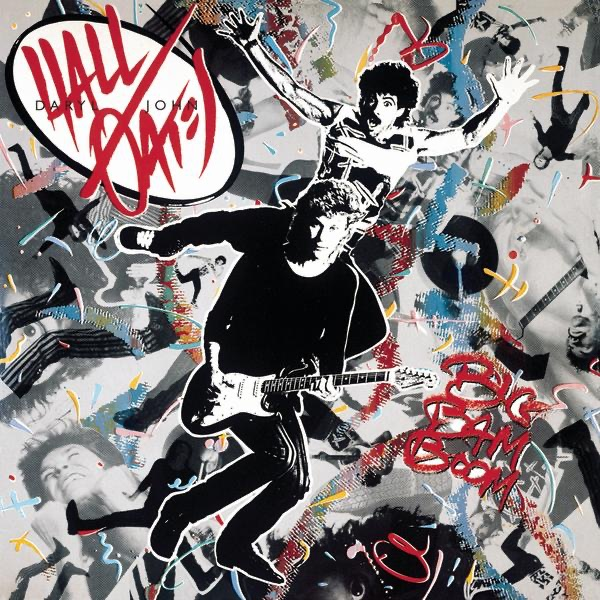

Big Bam Boom
Daryl Hall & John Oates
Upgrade idea: This Masterdisk original pressing is the authentic artifact. No significant audiophile reissue exists for Big Bam Boom specifically.
- Original release
- 1984
- Pressing year
- 1984
- Country
- US
- Format
- Vinyl LP, Album, Stereo
- Label / Cat#
- RCA – AFL1-5309
- Genres
- Rock
- Styles
- Pop Rock
- Discogs release
- 20152948
- Discogs master
- 4512
- Apple Music
- Big Bam Boom (Remastered) [Bonus Track Version]
- Wikipedia
- Big Bam Boom
Production notes
Tracklist (Discogs)
| A1 | Dance On Your Knees | 1:27 |
| A2 | Out Of Touch | 4:24 |
| A3 | Method Of Modern Love | 5:27 |
| A4 | Bank On Your Love | 4:37 |
| A5 | Some Things Are Better Left Unsaid | 5:23 |
| B1 | Going Thru The Motions | 5:39 |
| B2 | Cold Dark And Yesterday | 4:35 |
| B3 | All American Girl | 4:25 |
| B4 | Possession Obsession | 4:34 |
Tracklist (Apple Music)
| 1 | Dance On Your Knees | 1:27 |
| 2 | Out of Touch | 4:21 |
| 3 | Method of Modern Love | 5:33 |
| 4 | Bank On Your Love | 4:18 |
| 5 | Some Things Are Better Left Unsaid | 5:26 |
| 6 | Going Thru the Motions | 5:40 |
| 7 | Cold Dark and Yesterday | 4:40 |
| 8 | All American Girl | 4:28 |
| 9 | Possession Obsession | 4:36 |
| 10 | Out of Touch (12" Version) | 7:42 |
| 11 | Method of Modern Love (12" Version) | 7:49 |
| 12 | Possession Obsession (12" Version) | 6:31 |
| 13 | Dance On Your Knees (12" Version) | 6:40 |
Personnel & credits
- Mick Haggerty — Art Direction
- Bob Clearmountain — Engineer, Mixed By, Producer
- Tommy Mottola — Management, Directed By
- Jean Pagliuso — Photography
- Larry Williams (9) — Photography
- Daryl Hall — Producer, Arranged By
- John Oates — Producer, Arranged By
Identifiers
- Barcode: 078635530919 (String)
- Matrix / Runout: AFL1 5309 A 112-111 (Runout A)
- Matrix / Runout: AFL1 5309 B 112-111 (Runout B)
Notes
The major difference with the other versions is the "1984 RCA Records" on the labels, no text above this one (other versions have "Made in USA" or "TMK(S) RCA CORP.". Also, no white letter text around the label. Horizontal colour design in both A and B side.
Includes a 1984 Calendar and a Lyrics Poster. Original Sleeve missing. Unknown date release and pressing country. RCA AFL1-5309 on the top left corner of the back cover. Barcode on the bottom left corner of the back cover.
Notes & discrepancies
- Track count differs: Discogs=9, Apple Music=13
- Total runtime differs by 1720s (Discogs=2431s, Apple Music=4151s) — likely a different master/remaster.
Big Bam Boom is the eleventh studio album by Daryl Hall & John Oates, released in October 1984 on RCA Records. It arrived at the absolute peak of their commercial dominance — they were the best-selling duo in music history at that point — and leans heavily into the mid-1980s synthesizer pop and drum machine aesthetic that defined the era. Produced by Hall, Oates, and Bob Clearmountain, it spawned several hits including “Out of Touch,” “Method of Modern Love,” and “Some Things Are Better Left Unsaid,” cementing their place as one of the defining acts of 1980s pop-R&B.
The album is a product of its moment — the drum machines, gated reverb, and layered synths are quintessentially 1984 — but Hall’s blue-eyed soul vocal delivery and the duo’s songwriting craft keep it from feeling purely throwaway. “Out of Touch” in particular is a perfect pop single, and the album holds up as a document of peak Hall & Oates.
This 1984 original US RCA pressing (catalog AFL1-5309) was mastered at Masterdisk — one of New York’s premier mastering facilities of the era — with the RL initials indicating Bob Ludwig or Ron Lorman, both legendary engineers who worked extensively at Masterdisk during this period. Masterdisk masterings of 1980s major-label releases are consistently well-regarded for their dynamic range and clarity. The matrix
AFL1-5309-B-1C MASTERDISK RLconfirms this provenance.About this 1984 US pressing (Vinyl, LP): RCA Records catalog AFL1-5309, original 1984 US pressing. Mastered at Masterdisk (RL). Barcode 07863553091.